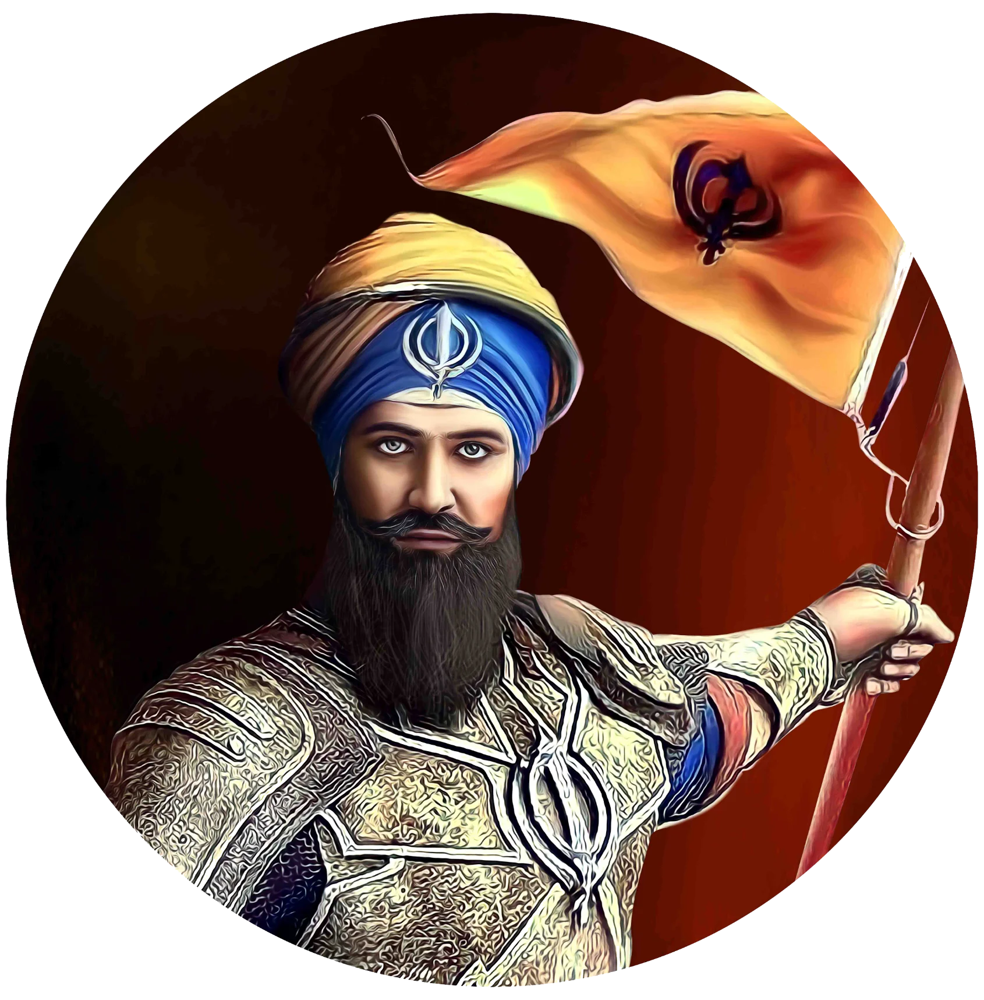

Banda Singh Bahadur

Title: Banda Singh Bahadur
Category: Religious Corner
Artist: Historical Figure
Year: 1670 – 1716
Category: Religious Corner
Artist: Historical Figure
Year: 1670 – 1716
BANDA SINGH BAHADUR
Banda Singh Bahadur was born as Lachman Das in 1670 at Rajouri, Jammu & Kashmir. He had been a farmer in his early years, and later became an experienced hunter, thoroughly proficient with firearms. He then turned to an ascetic life and joined an order of mendicants, where he was given a new name, Madho Das. He went South and set up his own religious establishment at Nanded (in present day Maharashtra), where he lived for 15 years before meeting Guru Gobind Singh. The tenth Guru chose Madho Das to foment rebellion in the Punjab region and punish those who had persecuted the Sikhs and murdered his sons. Madho Das chose a new name for himself, which described his relationship to the Guru - Banda, or the slave.
When he left Nanded for Punjab in 1708, he had only 25 people with him - the five Panj Piyare and 20 other Sikhs. As a symbol of authority, the Guru gave him five arrows from his own quiver, a Nishan Sahib (flag) and a Nagara (war drum). As he entered Punjab, a steady stream of Sikhs joined him, and he started undertaking small-scale military operations. His first major military success was the lightening assault on Samana town, on 26 November 1709. He next stormed Ghuram, Thaska, Mustafabad and Sadhaura - each Sikh victory added to Banda's mystique and gave the people confidence in their own power. Banda's next success against the Mughal forces was in the plains of Chappar Chiri, near Sirhind, on 22 May 1710. Over the next seven years, his forces overran almost all major towns of Punjab and reached the gates of Lahore.
Banda built a capital of the emerging Sikh State at Mukhlispur, renaming it as 'Lohgarh' and planted the Khalsa flag on its ramparts - this was the first time the Sikhs had claimed a region as their own. Despite repressions by the Mughal Government, Banda considered his struggle to be political, and did not reduce it to a communal strife. His actions were directed against the tyranny of the local Mughal officials of Punjab, whose atrocities were resented and opposed by people of all religions.
Banda took his last stand at Gurdas Nangal, in an eight-month long siege of his forces here. He was finally captured, brought to Delhi and executed on 09 June 1716.
Banda Singh Bahadur was born as Lachman Das in 1670 at Rajouri, Jammu & Kashmir. He had been a farmer in his early years, and later became an experienced hunter, thoroughly proficient with firearms. He then turned to an ascetic life and joined an order of mendicants, where he was given a new name, Madho Das. He went South and set up his own religious establishment at Nanded (in present day Maharashtra), where he lived for 15 years before meeting Guru Gobind Singh. The tenth Guru chose Madho Das to foment rebellion in the Punjab region and punish those who had persecuted the Sikhs and murdered his sons. Madho Das chose a new name for himself, which described his relationship to the Guru - Banda, or the slave.
When he left Nanded for Punjab in 1708, he had only 25 people with him - the five Panj Piyare and 20 other Sikhs. As a symbol of authority, the Guru gave him five arrows from his own quiver, a Nishan Sahib (flag) and a Nagara (war drum). As he entered Punjab, a steady stream of Sikhs joined him, and he started undertaking small-scale military operations. His first major military success was the lightening assault on Samana town, on 26 November 1709. He next stormed Ghuram, Thaska, Mustafabad and Sadhaura - each Sikh victory added to Banda's mystique and gave the people confidence in their own power. Banda's next success against the Mughal forces was in the plains of Chappar Chiri, near Sirhind, on 22 May 1710. Over the next seven years, his forces overran almost all major towns of Punjab and reached the gates of Lahore.
Banda built a capital of the emerging Sikh State at Mukhlispur, renaming it as 'Lohgarh' and planted the Khalsa flag on its ramparts - this was the first time the Sikhs had claimed a region as their own. Despite repressions by the Mughal Government, Banda considered his struggle to be political, and did not reduce it to a communal strife. His actions were directed against the tyranny of the local Mughal officials of Punjab, whose atrocities were resented and opposed by people of all religions.
Banda took his last stand at Gurdas Nangal, in an eight-month long siege of his forces here. He was finally captured, brought to Delhi and executed on 09 June 1716.

Open on Mobile
Scan to view this art record in Chrome on your phone.